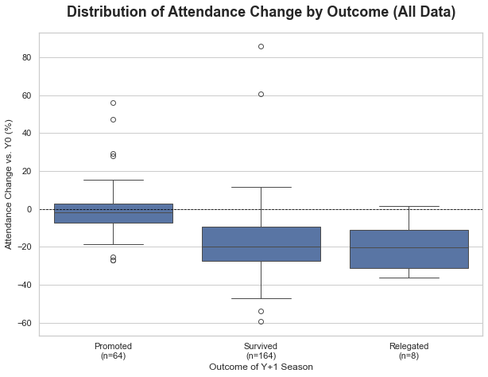
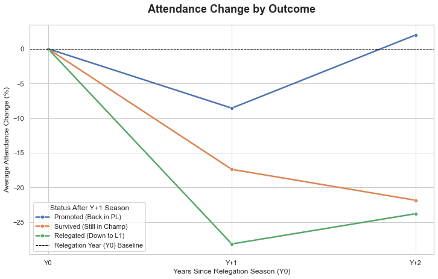
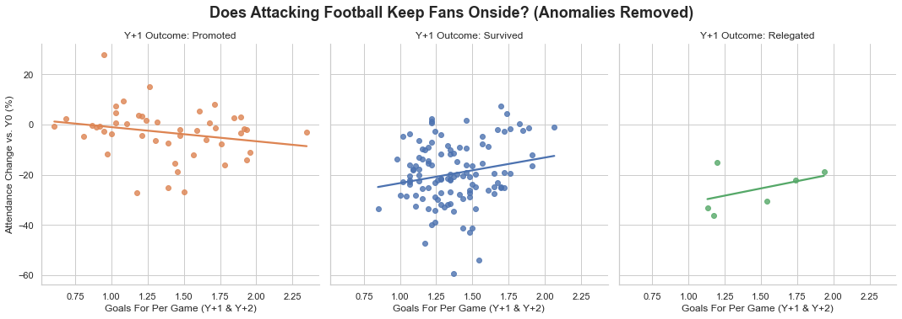

--- TABLE 1: Increased Attendance (Year +1) ---
| Team | Attendance (Y0) | Attendance (Y+1) | Change (%) |
|:------------------|------------------:|-------------------:|-------------:|
| Sunderland | 20865 | 33492 | 60.52 |
| Leicester City | 19835 | 29231 | 47.37 |
| Nottingham Forest | 21910 | 23051 | 5.21 |
| Ipswich Town | 24426 | 25455 | 4.21 |
| Burnley | 19399 | 19953 | 2.86 |
| Newcastle United | 49754 | 51106 | 2.72 |
| Norwich City | 24350 | 24952 | 2.47 |
| Crystal Palace | 14992 | 15248 | 1.71 |
| Luton Town | 11244 | 11420 | 1.57 |
| Middlesbrough | 29848 | 29994 | 0.49 |I’m a Burnley fan. With our recent promotion to the Premier League we are firmly consolidated as a yoyo club par excellence - we rank joint-4th with Sunderland on the Yoyo-meter (below). So what better time to assess some of the impacts of relegation from the Premier League? Because it’s never too early to plan ahead.
In this article, I’ll be exploring if, how and for how long Premier League relegation disrupts attendances. We’ll also examine some mitigating factors. Does attractive football help maintain attendances? Is mid-table mediocrity worse for attendances than being in a relegation dogfight?
The dataset I have designed for this project combines a few different online resources and also engineers some variables. You can read about it and download it here.
Yoyometer
| Club | PL Relegations | Championship Promotions | Current League |
|---|---|---|---|
| Norwich City | 6 | 5 | Championship |
| West Bromwich Albion | 5 | 5 | Championship |
| Leicester City | 5 | 5 | Championship |
| Burnley | 4 | 5 | Premier League |
| Sunderland | 4 | 5 | Premier League |
| Crystal Palace | 4 | 4 | Premier League |
| Middlesbrough | 4 | 4 | Championship |
| Watford | 4 | 4 | Championship |
| Sheffield United | 4 | 3 | Championship |
| Southampton | 3 | 2 | Championship |
Methodology
Data Collection
For this project, I gathered attendance, league position, and performance data for every club relegated from the Premier League, spanning a four-year period for each event:
- Year -1: The season before the Premier League relegation season.
- Year 0: The Premier League season that resulted in relegation.
- Year +1: The first season after relegation (in the Championship).
- Year +2: The second season after relegation.
A temporary fifth year of data (Year +3) was programmatically generated to extract the league tier, which is used to determine the final outcome of the Year +2 season. After achieving that, the temporary Year +3 data was dropped.
Sources
For Attendance data, I referenced European-Football-Statistics.co.uk.
For Position data and Performance data I incorporated data from the Fjelstul English Football Database, which is a comprehensive catalogue of English Football from 1888-2024. I used only a small section from the standings dataset, but he also has datasets covering seasons, teams, matches and appearances. Worth a look if you have a project in mind. The database is copyrighted (“© 2024 Joshua C. Fjelstul, Ph.D.”) but accessible via the CC-BY-SA 4.0 license (https://creativecommons.org/licenses/by-sa/4.0/legalcode).
I will also be making my own dataset available under the same CC-BY-SA 4.0 license.
Fjelstul, Joshua C. “The Fjelstul English Football Database v1.1.0.” May 26, 2024. https://www.github.com/jfjelstul/englishfootball.
Dataset
In addition to merging attendance data with position data and performance data, some key features of the dataset had to be engineered. I needed Year_vs_Relegation and Year_End_Outcome columns in order to group by season outcomes and to track attendance over time.
For my single source of truth dataset, I am using the raw values for performance (Points, Goals, etc.) and calculating per-game metrics as needed for analysis. Below is a snapshot of the final, tidy dataset.
Limitations
As tidy as it is, there are still some pretty big limitations to this dataset:
Season-Level Granularity:
- The dataset aggregates data at the season level, meaning any within-season events—such as managerial changes, mid-season form swings, or cup runs—are not captured.
Loss of Match-Level Variability:
- Attendance figures are averaged per season, so high- or low-attendance matches (e.g., local derbies) are smoothed out.
External Influences Aren’t Captured (with the exception of COVID) - Factors such as weather, ticket pricing, fan protests, or extraordinary events (e.g., stadium closures) are not included. These could all contribute to unexplained variance in attendance. However, I do think that over a season, these sorts of things tend to balance themselves out. Except for COVID and stadium reconstructions, which both need special handling.
Handling COVID-19
- A quick note on the elephant in the stadium: the 2019-20 and 2020-21 seasons. Since many games were played with zero or partial attendance, including them as “0” would catastrophically skew the averages. To prevent this, the data cleaning pipeline explicitly searches for any attendance data marked “COVID” and converts it to a null value (pd.NA). All subsequent averaging functions automatically ignore these null values, so the analysis is not contaminated by seasons played behind closed doors.
Handling Stadium Anomalies The data contains three major structural anomalies where attendance was dictated by stadium construction, not fan sentiment or on-pitch performance:
Middlesbrough (1993-94): Attendance artificially plummeted due to a stadium rebuild.
Sunderland (1997-98): Attendance saw a massive, artificial spike from moving to the new Stadium of Light.
Leicester City (2002-03): A similar spike occurred when the club moved to the Walkers Stadium (now called the King Power Stadium).
To prevent these outliers from skewing my interpretations, these specific team-seasons were identified. Unless I specifically mention their inclusion, you can safely assume they were filtered out of the analysis.
Downloadable
If you still want the dataset for analysis after all that, or you’re wondering why I keep calling things tidy, then check out Too Messy to Melt for a technical guide to how this dataset was constructed. Or you can inspect the data dictionary and grab the downloadable dataset straight from my GitHub.
Analysis
Increased attendance after relegation?
Let’s start on a positive note. On 10 occasions, teams managed to increase their average attendance in the first season (Y+1) immediately following relegation.
And I have to give a shoutout to Burnley and, indeed, to Vincent Kompany because he certainly galvanised the supporters that season.
A couple teams really jump out. Both Sunderland and Leicester City moved into new stadia the year after their relegation, and this gave them a considerable bump. They must have been absolutely packing out their stadia the season prior and had supporters banging down the doors to get in. Sunderland even managed to add over 5,000 supporters to their tally the season after relegation, despite the fact that they were still stuck in the Championship. Leicester also increased attendances in 2003-04, by 1,600 to 30,983. But they spent that season in the Premier League, so it’s less startling to see an increase.
Newcastle also catch the eye, but not just because their 51,106 fans in 2016-17 is an extraordinary number - everyone knows Newcastle is a football-mad city. What’s truly insightful is comparing their two most recent relegations.
After relegation in 2009, the club saw a significant 11% drop in average attendance.
After relegation in 2016-17, The club saw a 2.7% increase in attendance.
That’s 13.7-point swing. The club was massive in both scenarios, so “big club” is a constant. The most obvious variable is “vibes.”
At the end of 2008-09 Newcastle’s all-time record goalscorer and local lad Alan Shearer had stepped up to try and save Newcastle. He only had 8 games to do it in. No matter the outcome, he was supposed to stay on as manager into the next season. But they got relegated and he didn’t get offered a contract for the next season. There’s no doubt that this was a low point between Newcastle fans and their owner Mike Ashley. And this was borne out in the 2009-10 attendances.
2016-17 was the polar opposite. Similar to how Burnley fell under the spell of Vincent Kompany in 2022/23, Newcastle fans had a great relationship with Rafael Benitez, even if Mike Ashley was still as loathed as ever. Benitez was hired towards the end of their 2015/16 relegation season and it was considered quite a coup to attract this Champions League-winning manager to a Championship-bound club. So the fans showed their appreciation during his first full season in charge with record-breaking attendances.
And in general?
Those positive stories are, unfortunately, the exceptions. On average, attendance falls significantly. But to find the real signal, we must first identify and handle the noise.
A box plot of all post-relegation data (Y+1 and Y+2) shows the wild variance in outcomes.
--- PLOT: Box Plot for Distribution (All Data Included) ---
The plot above clearly shows several extreme statistical outliers (the dots) that are skewing the data. To understand what they are, we can use the 1.5 * IQR rule (the same logic the box plot uses) to print a list of them.
--- Outlier Hunt (Using 1.5 * IQR Rule) ---
--- Outliers for 'Promoted' (Outside -22.31 to 17.73) ---
| Relegation_Event_ID | Year_vs_Relegation | Pct_Change_vs_Y0_Display |
|:-------------------------|---------------------:|---------------------------:|
| Leicester City 2001-02 | 2 | 56.20 |
| Leicester City 2001-02 | 1 | 47.37 |
| Bolton Wanderers 1995-96 | 2 | 29.38 |
| Sunderland 2005-06 | 2 | 27.84 |
| Fulham 2018-19 | 1 | -25.30 |
| Hull City 2014-15 | 1 | -26.99 |
| Birmingham City 2007-08 | 1 | -27.12 |
--- Outliers for 'Survived' (Outside -53.88 to 17.15) ---
| Relegation_Event_ID | Year_vs_Relegation | Pct_Change_vs_Y0_Display |
|:----------------------|---------------------:|---------------------------:|
| Sunderland 1996-97 | 2 | 85.69 |
| Sunderland 1996-97 | 1 | 60.52 |
| Wimbledon 1999-2000 | 1 | -53.95 |
| Wimbledon 1999-2000 | 2 | -59.43 |Case-by-Case Anomaly Handling
This list gives us a clear action plan. To understand the true relationship between performance and attendance, we must filter out cases where attendance was driven by external structural factors, not fan behavior.
| Relegation Event | Year | Change | Outlier Type | Decision | Reason |
|---|---|---|---|---|---|
| Sunderland 1996-97 | Y+1, Y+2 | +61%, +86% | Stadium Anomaly | Remove | Moved to the new, much larger Stadium of Light. |
| Leicester City 2001-02 | Y+1, Y+2 | +47%, +56% | Stadium Anomaly | Remove | Moved to the new Walkers (King Power) Stadium. |
| Bolton Wanderers 1995-96 | Y+2 | +29% | Stadium Anomaly | Remove | Y+2 (1997-98 season) was their first in the new Reebok Stadium. |
| Middlesbrough 1992-93 | Y+1 | -38% | Stadium Anomaly | Remove | Attendance nosedived during a stadium rebuild. |
| Wimbledon 1999-2000 | Y+1, Y+2 | -54%, -59% | Toxicity | Keep | To be continued… |
| Hull City 2014-15 | Y+1 | -27% | Toxicity | Keep | To be continued… |
| Birmingham City 2007-08 | Y+1 | -27% | Toxicity | Keep | To be continued… |
Now, with the data properly filtered, let’s look at the real story.
And we may as well start with that Toxicity factor I mentioned above.
The Toxicity Factor: When Loyalty Snaps (and When It Doesn’t)
On-pitch performance isn’t the only driver. The data shows that a toxic or broken relationship between a club’s owners and its fans can act as a powerful accelerant for an attendance collapse.
These aren’t just “bad vibes”; they are measurable, real-world events:
Hull City (2014-15): The -27% drop in Y+1 wasn’t just about relegation. It directly coincided with a fan mutiny over the owners’ deeply unpopular attempt to rebrand the club as “Hull Tigers.”
Birmingham City (2007-08): A similar story. Their -27% nosedive in Y+1 was fueled by widespread fan protests calling for the board to resign.
Newcastle (2009-10 vs. 2016-17): This is the perfect A/B test. In both 2009 and 2016, the club had the same toxic ownership under Mike Ashley.
In 2009-10, the vibe was poisonous. The result? A significant 11% drop in attendance.
In 2016-17, a different “vibe” won. Hiring (and keeping) Rafa Benitez was such an unexpected coup that his popularity papered over the cracks, galvanizing the fanbase and leading to a 2.7% increase.
Wimbledon (1999-2000): This is the ultimate case study. They were already a “homeless” club, playing at Crystal Palace’s Selhurst Park during their Y0 relegation season. Their baseline attendance was already depressed. When they lost their Premier League status, attendance collapsed by -59%. The showpiece occasion of a Premier League game seems to have been the last thread holding that displaced fanbase together. When it snapped, so did the club.
A Results Business
Next up, we’ll look at our Year_End_Outcome variable. Let’s plot the attendance change over time, grouping teams by whether they were Promoted, Survived, or Relegated in their first post-relegation season.
--- PLOT 1: Attendance Change by Y+1 Outcome (Final Filter) ---
--- New Averages for Analysis ---
| Outcome_Group | Year_vs_Relegation | Pct_Change_vs_Y0_Display |
|:----------------|---------------------:|---------------------------:|
| Promoted | 1 | -8.5 |
| Promoted | 2 | 2.0 |
| Relegated | 1 | -20.7 |
| Relegated | 2 | -17.5 |
| Survived | 1 | -17.2 |
| Survived | 2 | -21.6 |
Irrespective of season outcome, relegated teams on average lose fans. And there seems to be a clear correlation between team performance and attendance. Moreover, it does seem that performance affects attendances.
Promoted (Green Line): Teams that bounce straight back (like Burnley) see their Y+1 attendance drop minimized to just -8.6%. By Y+2, they are back in the Premier League, and attendance recovers to surpass its pre-relegation level by 2%.
Survived (Blue Line): Teams that “survive” and stay in the Championship see a much larger initial drop of -17.2%. Worse, by Y+2, that optimism fades and attendance dwindles further to -21.6%.
Relegated (Orange Line): Teams that enter freefall and plummet into League 1 see a catastrophic -28% drop in Y+1, which slightly recovers to -24% in Y+2.
Would champagne football help?
If you’re stuck in the Championship, can you at least keep the fans entertained with attacking football?
To test this, I’ve plotted Goals_For_Per_Game against the percentage change in attendance for all post-relegation seasons (Y+1 and Y+2), again grouped by the team’s outcome and with the stadium anomalies removed.
--- PLOT 2: Goals vs. Attendance % Change (Final Filter) ---
The answer seems to be: yes, but only if you have nothing else to play for.
For Survived teams, there is a fairly clear positive relationship. If a team is destined for another year of mid-table Championship football, entertainment value (scoring goals) seems to help keep traffic coming through the turnstiles.
Conclusions
- Teams can typically expect to lose 16-22% of their attendance after relegation if they don’t bounce straight back, and that drop accelerates in the second year.
- If you are on track for promotion, losses are minimized to ~8% and attendance fully recovers upon returning to the Premier League. “Vibes” (like a popular manager), “toxicity” (like a detested owner) and “style” (attacking football) seem to be real factors. Style is most visible for teams stuck in mid-table, where the on-pitch result isn’t exciting enough on its own. But vibes and toxicity can keep a club afloat or cause it to sink.
- And if you are on track for League 1, these losses are considerably higher
- Relegation doesn’t automatically mean fan abandonment. Context matters: management, entertainment value, stadium capacity, and hope for promotion all play a role.
Sources:
Fjelstul, Joshua C. “The Fjelstul English Football Database v1.1.0.” May 26, 2024. https://www.github.com/jfjelstul/englishfootball
European-Football-Statistics.co.uk
Thumbnail image courtesy of Jaroslav A. Polák from Brno, Czech Republic, CC0, via Wikimedia Commons
{kind=link}